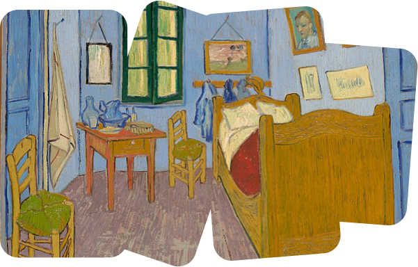

Conoce una breve historia detrás de sus obras más famosas
Sunflowers
Los girasoles es el nombre con que popularmente se conocen siete lienzos de Vincent van Gogh, los cuales conforman una serie llamada Los girasoles de Arlés, pintada entre 1888 y 1889. Las pinturas florales eran muy comunes en la tradición artística, especialmente en Holanda, pero raramente incluían girasoles, ya que se consideraban flores toscas. Sin embargo, Van Gogh apreciaba su sencillez, alegría y aspecto silvestre. Vincent se refiere al proyecto de Los girasoles de Arlés como una “sinfonía azul y amarilla”.
La chambre à arles
Una de las obras más importantes del pintor neerlandés, de la que existen tres versiones casi idénticas. El tema representado en esta pintura es el dormitorio de Van Gogh durante su estancia en la ciudad francesa de Arlés en una vivienda conocida como la Casa Amarilla. En esta casa residió desde principios del año 1888 hasta mediados de 1889. Van Gogh, en una carta que escribe a su hermano Théo, explica que él solo quiere expresar la tranquilidad y resaltar la sencillez de su dormitorio mediante el simbolismo de los colores.
Almond blossom
Pintada para su sobrino y ahijado recién nacido, esta obra muestra a un Van Gogh luminoso, lleno de optimismo por el nacimiento del bebé, que sería bautizado con el nombre de Vincent. El pintor también quiere plasmar una posible nueva vida para sí mismo y su futuro artístico, aunque como sabemos, el artista fallecería sólo tres meses después de acabar esta obra maestra.